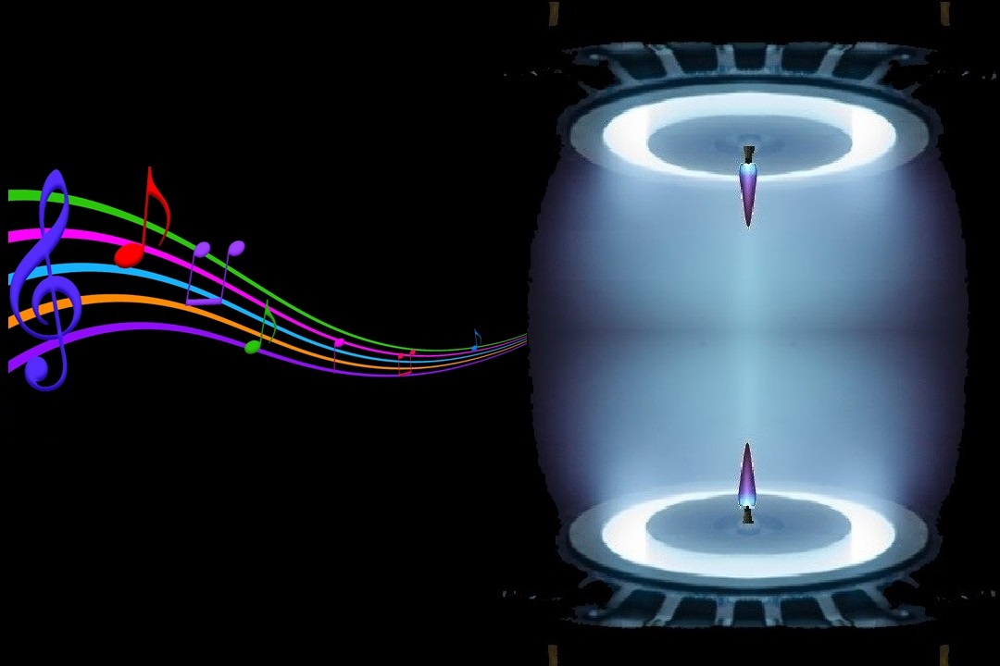

Ion Wind Speaker
From God's lips to your ears!
Enter a new world of ultra-authentic sound.
Discover outstanding clarity and detail.

ARTIST'S CONCEPTION
Just Pure Sound
Our ion wind loudspeakers generate sound without using any moving parts. They ionize the air by applying high voltage, and use our patented ionization control technique to convert electrical sound signals directly to audible sound. Not burdened by a moving mass, they excel in impulse response, transient response and expressiveness, and are able to faithfully reproduce every subtlety and nuance of a music album, a movie soundtrack, a concert hall performance, a live stadium show or an intimate poetry recital. Whether it is the rustle of falling leaves or the energy of soaring guitar riffs, you miss nothing and hear everything, at high or low volume.